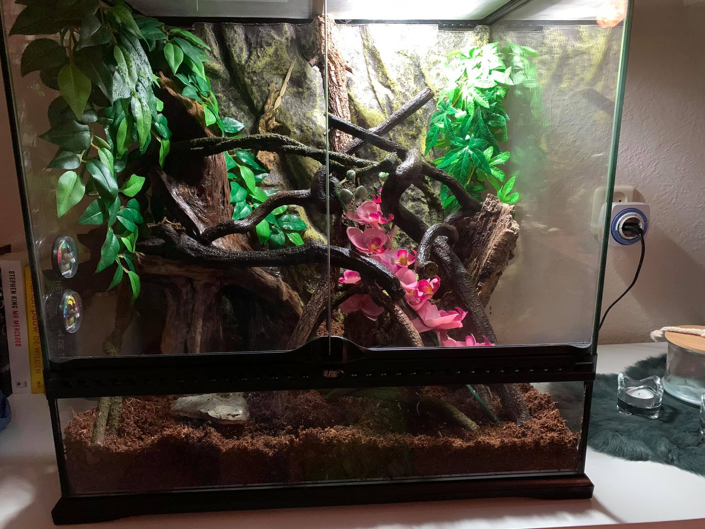

Deze pagina zal gaan over Frits de wimpergekko en over de wimpergekko in het algemeen.
Fritz de gekko is een fantastisch diertje. Hij is ontzettend leuk en grappig. Frits is gek op douches en in de nacht door de bak heen rennen. Frits heb ik aangeschaft in mei 2021 en is geboren in 2018.
De Wimpergekko is een avond en nacht actieve gekko, deze gekko soort slaapt hoofdzakelijk overdag en laat zich
dan
zelden zien.
Eenmaal wakker zodra de schemer valt zijn deze gekko’s erg actief en kunnen ze dankzij hun hechtlamellen met
gemak tegen allerlei oppervlakten oplopen.
Wimpergekko’s komen in een rustig en stressvrij terrarium het best tot hun recht en leveren dan veel kijkplezier
op voor jong en oud.

De wimpergekko is een hagedissensoort die afkomstig is van de oostelijke eilanden van Nieuw-Caledonië, een eilandengroep ten westen van Fiji en ten oosten van Australië. Voor een Lange tijd werd gedacht dat deze gekko soort was uitgestorven. In 1994 werd deze soort echter herontdekt. Sinds deze herontdekking is de soort in de reptielen hobby zeer populair geworden en met veel succes veelvuldig na gekweekt in gevangenschap. Deze succesvolle resultaten hebben zelfs gezorgd voor de redding van deze mooie gekko soort. Het diertje is vernoemd naar de twee kammen met kleine stekeltjes boven de ogen. Deze kammen doen sterk denken aan wimpers, dit is dan ook waar de naam van is afgeleid. Daarnaast is de soort ook te herkennen aan de duidelijk zichtbare kammen met kleine stekeltjes aan weerszijden van de kop die over de hals doorlopen in een rugkam aan weerszijden van de rug. Deze gekko soort komt voor in een zeer gevarieerd kleuren palet. De kleuren variëren van grijs tot groen, bruin en zelfs oranje en geel worden bij deze soort gezien. Het gedeelte tussen de kammen is nagenoeg altijd anders van kleur (in veel gevallen lichter maar niet altijd). De kop is in vergelijking tot het lichaam vrij groot en de staart is daarentegen vrij klein en slank. Wimpergekko’s bereiken over het algemeen een lichaamslengte van ongeveer twintig tot vijfentwintig centimeter lang. De Wimpergekko is een nachtactieve soort gekko’s die pas bij het vallen van de schemering tevoorschijn komt en actief zal worden. Zoals veel gekko soorten kan ook deze soort tegen gladde verticale oppervlakten lopen. Ze maken daarbij gebruik van hechtlamellen onder de tenen aan iedere poot. Wimpergekko’s kunnen met de juiste verzorging ongeveer vijftien jaar oud worden, maar er zijn gevallen bekend van exemplaren die rond de 25 jaar oud zijn geworden. Met de juiste verzorging heeft een u schitterend dier in huis dat zichzelf graag aan u zal laten zien en door het actieve karakter van de meeste exemplaren niet snel zal gaan vervelen. Voor meer informatie over het correct houden kunt u een uitgebreide caresheet lezen op de volgende webpagina: LICG caresheet wimpergekko